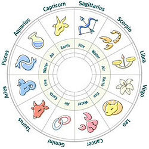

ASTROLOGY AND SCIENCE
 Astrology is generally defined as the belief that astronomical phenomena, like the stars overhead when you were born or the fact that Mercury is in retrograde, have the power to influence the daily events in our lives and our personality traits. This is, of course, very different from the study of astronomy, which is the scientific study of celestial objects, space, and the physics of the universe.
In some ways, astrology may seem scientific. It uses scientific knowledge about heavenly bodies, as well as scientific sounding tools, like star charts. Some people use astrology to generate expectations about future events and people's personalities, much as scientific ideas generate expectations. And some claim that astrology is supported by evidence — the experiences of people who feel that astrology has worked for them. But even with these trappings of science, is astrology really a scientific way to answer questions?
Here we'll use the Science Checklist to evaluate one way in which astrology is commonly used. See if you think it qualifies as scientific!
Astrology's basic premise is that heavenly bodies — the sun, moon, planets, and constellations — have influence over or are correlated with earthly events.
Scientific studies involving astrology have stopped after attempting and failing to establish the validity of astrological ideas. So far, there are no documented cases of astrology contributing to a new scientific discovery.
In the few cases where astrology has been used to generate testable expectations and the results were examined in a careful study, the evidence did not support the validity of astrological ideas.2 This experience is common in science — scientists often test ideas that turn out to be wrong. However, one of the hallmarks of science is that ideas are modified when warranted by the evidence. Astrology has not changed its ideas in response to contradictory evidence.
Scientists don't wait for others to do the research to support or contradict the ideas they propose. Instead, they strive to test their ideas, try to come up with counterarguments and alternative hypotheses, and ultimately, give up ideas when warranted by the evidence. Astrologers, on the other hand, do not seem to rigorously examine the astrological ideas they accept. As reflected by the minimal level of research in the field, they rarely try to test their arguments in fair ways. In addition, the astrological community largely ignores evidence that contradicts its ideas.